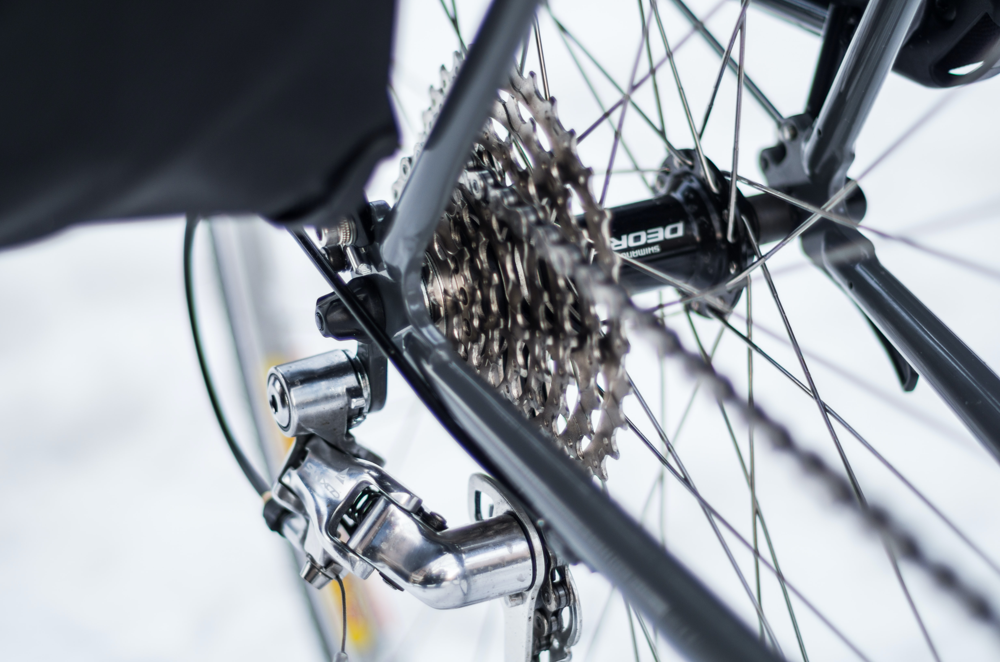
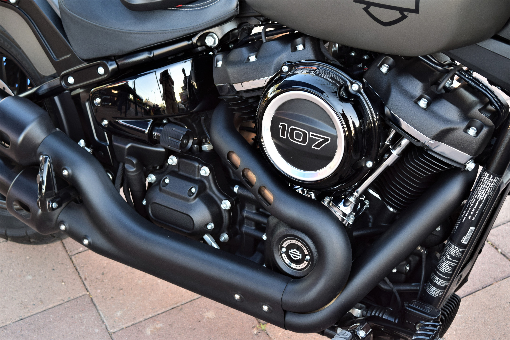

My Components
The Components I want
In 1876, the first combustion engine was built in Germany. Since then, engines have revolutionized the transportation industry. So why the heck am I still using bike gears!?!?!? All jokes aside, I love bike compenants because I can go on trails. But if I had a motor bike I could go wherever I want.